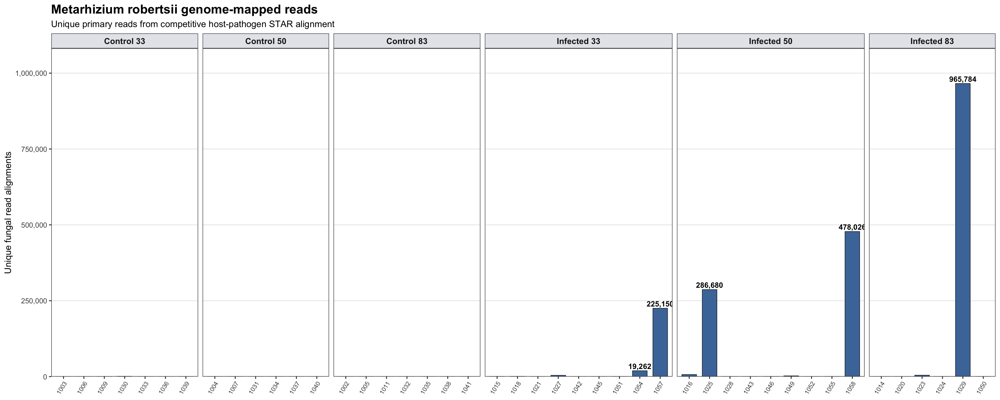
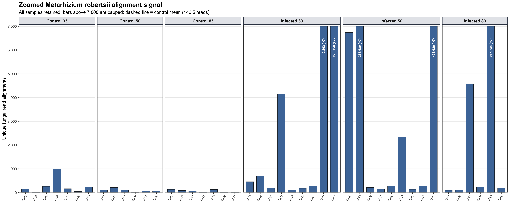
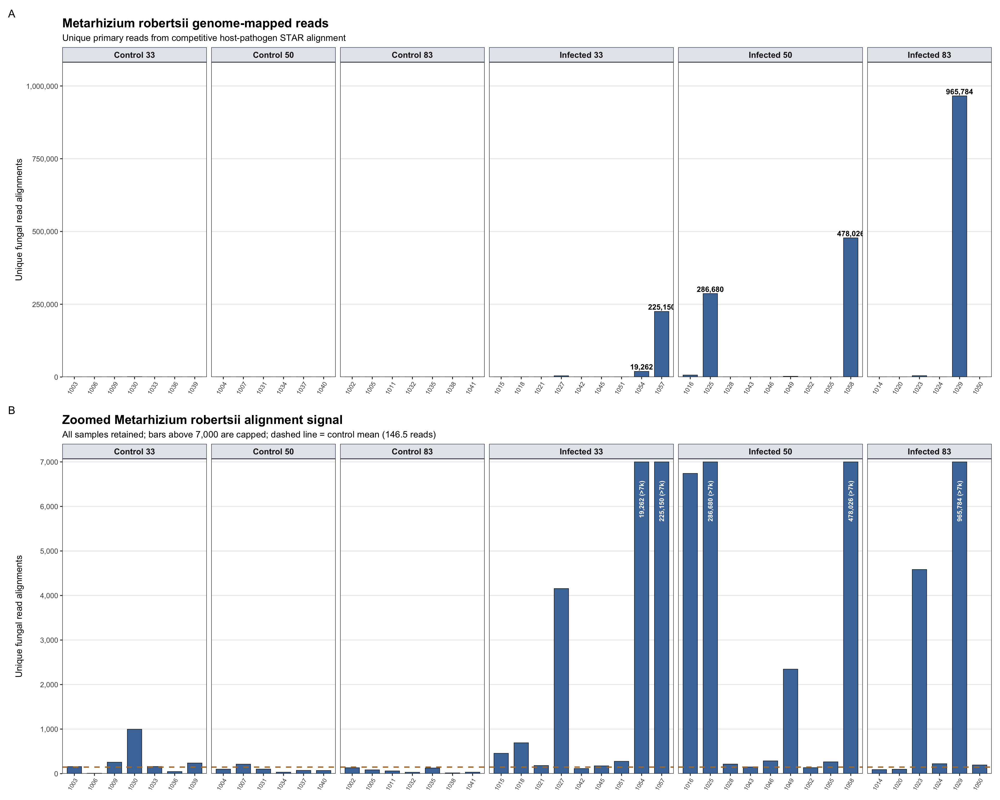
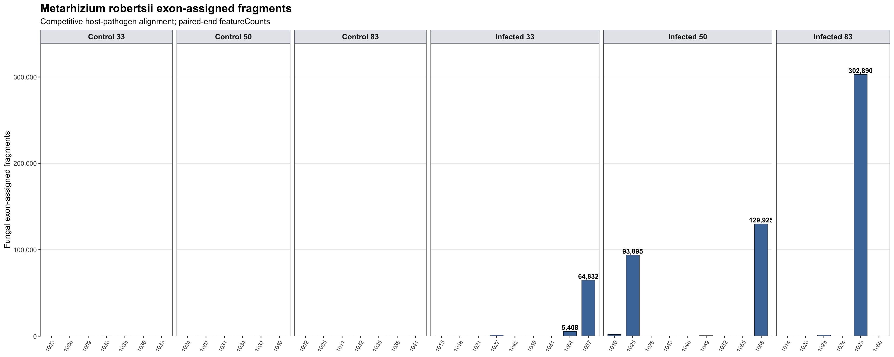
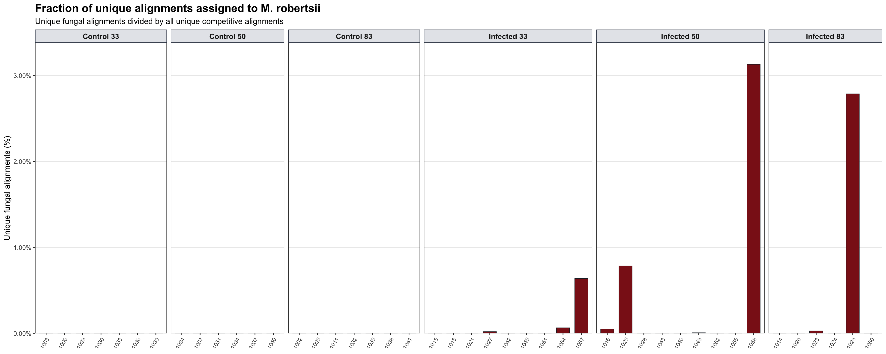
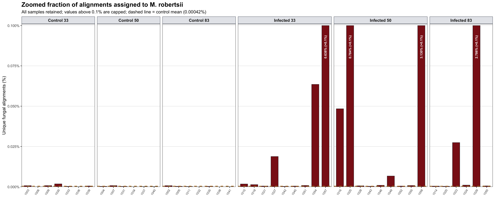
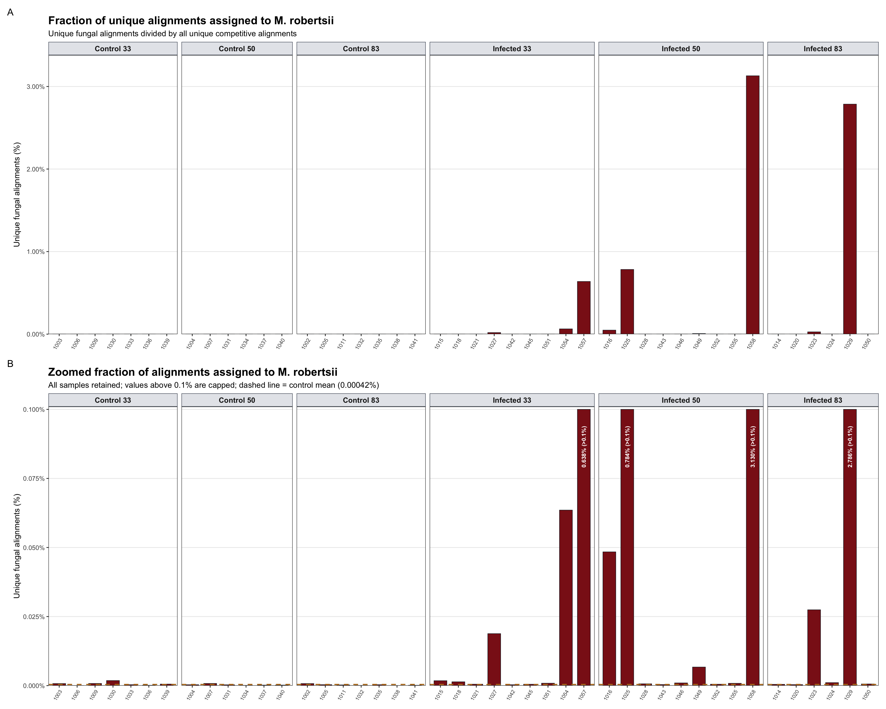
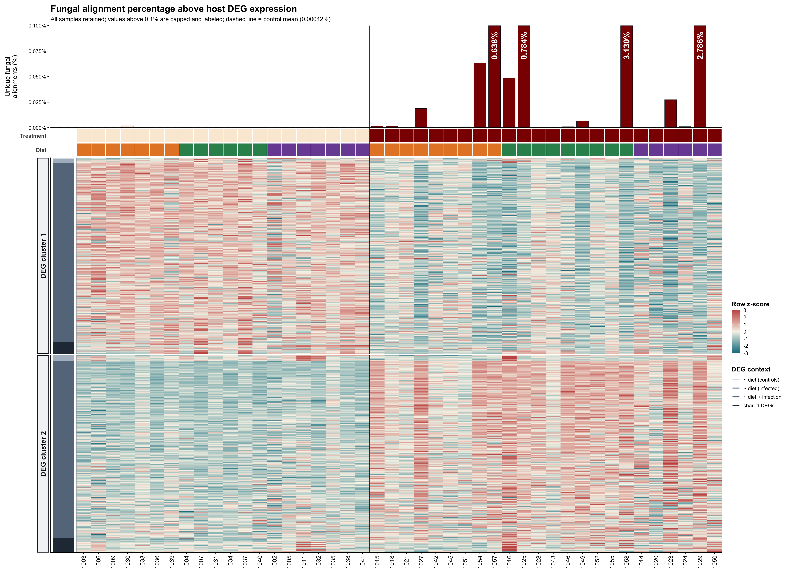
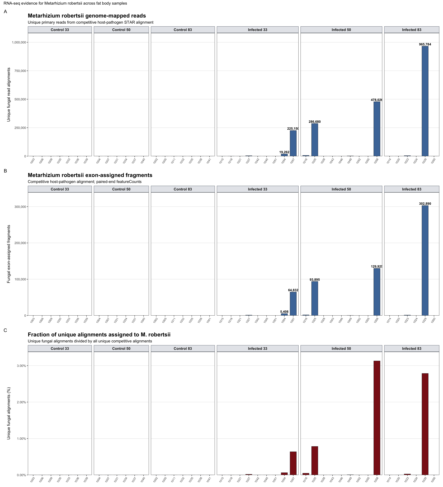

Last updated: 2026-08-05
Checks: 6 1
Knit directory:
gregaria-diet-infection-interaction/
This reproducible R Markdown analysis was created with workflowr (version 1.7.2). The Checks tab describes the reproducibility checks that were applied when the results were created. The Past versions tab lists the development history.
The R Markdown is untracked by Git. To know which version of the R
Markdown file created these results, you’ll want to first commit it to
the Git repo. If you’re still working on the analysis, you can ignore
this warning. When you’re finished, you can run
wflow_publish to commit the R Markdown file and build the
HTML.
Great job! The global environment was empty. Objects defined in the global environment can affect the analysis in your R Markdown file in unknown ways. For reproduciblity it’s best to always run the code in an empty environment.
The command set.seed(20260427) was run prior to running
the code in the R Markdown file. Setting a seed ensures that any results
that rely on randomness, e.g. subsampling or permutations, are
reproducible.
Great job! Recording the operating system, R version, and package versions is critical for reproducibility.
Nice! There were no cached chunks for this analysis, so you can be confident that you successfully produced the results during this run.
Great job! Using relative paths to the files within your workflowr project makes it easier to run your code on other machines.
Great! You are using Git for version control. Tracking code development and connecting the code version to the results is critical for reproducibility.
The results in this page were generated with repository version ea28407. See the Past versions tab to see a history of the changes made to the R Markdown and HTML files.
Note that you need to be careful to ensure that all relevant files for
the analysis have been committed to Git prior to generating the results
(you can use wflow_publish or
wflow_git_commit). workflowr only checks the R Markdown
file, but you know if there are other scripts or data files that it
depends on. Below is the status of the Git repository when the results
were generated:
Ignored files:
Ignored: .DS_Store
Ignored: analysis/output/
Ignored: code/R_timecourse_reference/
Ignored: code/scripts/__pycache__/
Ignored: data/raw_read_counts/DESeq2_output/overlap_DEGs/
Ignored: data/reference/
Ignored: output/.DS_Store
Ignored: output/rmd_runs/all-deg-catalogue_20260723-164715/
Ignored: output/rmd_runs/all-samples-deseq2-interaction-model_20260715-130121/
Ignored: output/rmd_runs/all-samples-diet-pairwise-deg_All_20260715-130143/
Ignored: output/rmd_runs/all-samples-infection-within-diet-deg_20260722-235632/
Ignored: output/rmd_runs/all-scaffolds-all-deg-catalogue_20260805-234450/
Ignored: output/rmd_runs/all-scaffolds-deg-overlap-prioritization_20260805-234426/
Ignored: output/rmd_runs/all-scaffolds-deseq2-interaction-model_20260805-234231/
Ignored: output/rmd_runs/all-scaffolds-diet-pairwise-deg_All_20260805-234255/
Ignored: output/rmd_runs/all-scaffolds-enrichment-term-gene-index_20260805-234619/
Ignored: output/rmd_runs/all-scaffolds-go-term-enrichment_20260805-234526/
Ignored: output/rmd_runs/all-scaffolds-infection-within-diet-deg_20260805-234314/
Ignored: output/rmd_runs/circled-cluster-enrichment_20260724-004440/
Ignored: output/rmd_runs/count-qc-exploration_20260804-151956/
Ignored: output/rmd_runs/curated-target-gene-figure_20260805-230618/
Ignored: output/rmd_runs/curated-target-gene-figure_20260805-230945/
Ignored: output/rmd_runs/curated-target-gene-figure_20260805-231113/
Ignored: output/rmd_runs/curated-target-gene-figure_20260805-231220/
Ignored: output/rmd_runs/curated-target-gene-figure_20260805-235850/
Ignored: output/rmd_runs/deg-logical-set-construction_20260722-230917/
Ignored: output/rmd_runs/deg-overlap-prioritization_20260715-131731/
Ignored: output/rmd_runs/deg-sample-filter-scenarios_20260722-230637/
Ignored: output/rmd_runs/deseq2-interaction-model_20260715-131611/
Ignored: output/rmd_runs/diet-infection-physiology-response_20260724-031243/
Ignored: output/rmd_runs/diet-pairwise-deg_All_20260715-131631/
Ignored: output/rmd_runs/enrichment-term-gene-index_20260804-152333/
Ignored: output/rmd_runs/enrichment-term-gene-index_20260805-235654/
Ignored: output/rmd_runs/go-term-enrichment_20260804-152115/
Ignored: output/rmd_runs/go-term-enrichment_20260805-235606/
Ignored: output/rmd_runs/infection-within-diet-deg_20260715-131650/
Ignored: output/rmd_runs/main-chromosome-all-deg-catalogue_20260804-152308/
Ignored: output/rmd_runs/main-chromosome-all-deg-catalogue_20260805-235540/
Ignored: output/rmd_runs/main-chromosome-all-samples-deseq2-interaction-model_20260804-152207/
Ignored: output/rmd_runs/main-chromosome-all-samples-deseq2-interaction-model_20260805-234902/
Ignored: output/rmd_runs/main-chromosome-all-samples-diet-pairwise-deg_All_20260804-152220/
Ignored: output/rmd_runs/main-chromosome-all-samples-diet-pairwise-deg_All_20260805-235244/
Ignored: output/rmd_runs/main-chromosome-all-samples-infection-within-diet-deg_20260804-152234/
Ignored: output/rmd_runs/main-chromosome-all-samples-infection-within-diet-deg_20260805-235258/
Ignored: output/rmd_runs/main-chromosome-cluster-enrichment_20260805-171903/
Ignored: output/rmd_runs/main-chromosome-cluster-enrichment_20260805-234916/
Ignored: output/rmd_runs/main-chromosome-cluster-enrichment_20260805-235722/
Ignored: output/rmd_runs/main-chromosome-deg-overlap-prioritization_20260804-152003/
Ignored: output/rmd_runs/main-chromosome-deg-overlap-prioritization_20260805-234815/
Ignored: output/rmd_runs/main-chromosome-deg-overlap-prioritization_20260805-235528/
Ignored: output/rmd_runs/metarhizium-read-burden_20260805-170635/
Ignored: output/rmd_runs/outlier-expression-signatures_20260722-180805/
Ignored: output/rmd_runs/outlier-sensitivity_20260715-131934/
Ignored: output/rmd_runs/outlier-sensitivity_20260805-234829/
Ignored: output/rmd_runs/outliers-load-enrichment_20260715-131837/
Ignored: output/rmd_runs/outliers-removed-deseq2-interaction-model_20260715-130246/
Ignored: output/rmd_runs/outliers-removed-diet-pairwise-deg_All_20260715-130302/
Ignored: output/rmd_runs/outliers-removed-infection-within-diet-deg_20260723-001457/
Ignored: output/rmd_runs/phase-signature-overlap-no-outliers_20260723-001557/
Ignored: output/rmd_runs/phase-signature-overlap_20260722-235730/
Ignored: output/rmd_runs/physiology-candidate-genes_20260715-130650/
Ignored: output/rmd_runs/physiology-candidate-genes_20260805-234651/
Ignored: output/rmd_runs/placed-unplaced-scaffold-analysis_20260804-152445/
Ignored: output/rmd_runs/placed-unplaced-scaffold-analysis_20260805-235135/
Ignored: output/rmd_runs/presentation-labeled-infection-deg-pca_20260724-020436/
Ignored: output/rmd_runs/publication-figures_20260805-014737/
Ignored: output/rmd_runs/publication-figures_20260805-132450/
Ignored: output/rmd_runs/publication-figures_20260805-134013/
Ignored: output/rmd_runs/publication-figures_20260805-135151/
Ignored: output/rmd_runs/publication-figures_20260805-140100/
Ignored: output/rmd_runs/publication-figures_20260805-155843/
Ignored: output/rmd_runs/publication-figures_20260805-160612/
Ignored: output/rmd_runs/publication-figures_20260805-164712/
Ignored: output/rmd_runs/publication-figures_20260805-170527/
Ignored: output/rmd_runs/publication-figures_20260805-171500/
Ignored: output/rmd_runs/publication-figures_20260805-172127/
Ignored: output/rmd_runs/publication-figures_20260805-231240/
Ignored: output/rmd_runs/scaffold-origin-audit_20260804-152436/
Ignored: output/rmd_runs/study-design-data_20260804-151947/
Ignored: output/rmd_runs/unplaced-scaffold-origin-screen_20260725-143720/
Ignored: output/rmd_runs/unplaced-scaffold-origin-workflow_20260724-024903/
Ignored: output/rmd_runs/workflow-reproducibility_20260804-151949/
Ignored: output/runs/
Ignored: scripts/.RData
Ignored: scripts/.Rhistory
Untracked files:
Untracked: Rplots.pdf
Untracked: analysis/27-scaffold-origin-audit.Rmd
Untracked: analysis/28-placed-unplaced-scaffold-analysis.Rmd
Untracked: analysis/28-placed-unplaced-scaffold-analysis_cache/
Untracked: analysis/29-metarhizium-read-burden.Rmd
Untracked: analysis/30-curated-target-gene-figure.Rmd
Untracked: analysis/31-all-scaffolds-deg-overlap-prioritization.Rmd
Untracked: analysis/32-all-scaffolds-deg-catalogue.Rmd
Untracked: analysis/33-all-scaffolds-go-term-enrichment.Rmd
Untracked: analysis/34-all-scaffolds-enrichment-term-gene-index.Rmd
Untracked: analysis/archive.Rmd
Untracked: analysis/assets/
Untracked: code/HOST_PATHOGEN_DUAL_RNASEQ.md
Untracked: code/SCAFFOLD_ORIGIN_AUDIT.md
Untracked: code/SCAFFOLD_ORIGIN_HOMOLOGY.md
Untracked: code/Snakefile.host_pathogen_dual_rnaseq
Untracked: code/Snakefile.scaffold_origin_audit
Untracked: code/Snakefile.scaffold_origin_homology
Untracked: code/config/
Untracked: code/pilot/check_host_pathogen_dual_hpc.sh
Untracked: code/pilot/check_host_pathogen_dual_progress.sh
Untracked: code/pilot/check_scaffold_homology_databases_hpc.sh
Untracked: code/pilot/check_scaffold_origin_audit_hpc.sh
Untracked: code/pilot/check_scaffold_origin_audit_progress.sh
Untracked: code/pilot/check_scaffold_origin_homology_hpc.sh
Untracked: code/pilot/check_scaffold_origin_homology_progress.sh
Untracked: code/rules/07_host_pathogen_dual_rnaseq.smk
Untracked: code/rules/08_scaffold_origin_audit.smk
Untracked: code/rules/09_scaffold_origin_homology.smk
Untracked: code/scripts/build_combined_reference.py
Untracked: code/scripts/build_host_origin_evidence_catalogue.py
Untracked: code/scripts/build_scaffold_origin_audit.py
Untracked: code/scripts/compare_host_count_matrices.py
Untracked: code/scripts/compare_host_deseq2_results.py
Untracked: code/scripts/download_gregaria_protein_fasta_hpc.sh
Untracked: code/scripts/download_kraken_pluspf_20260626.slurm
Untracked: code/scripts/download_metarhizium_arsef23_hpc.sh
Untracked: code/scripts/download_scaffold_homology_databases.slurm
Untracked: code/scripts/export_scaffold_origin_candidates.py
Untracked: code/scripts/extract_unplaced_scaffolds.py
Untracked: code/scripts/identify_unplaced_deg_scaffolds.py
Untracked: code/scripts/install_metatranscriptomics_qc_env.slurm
Untracked: code/scripts/install_scaffold_homology_env.slurm
Untracked: code/scripts/make_scaffold_origin_transfer_bundle.py
Untracked: code/scripts/merge_featurecounts.py
Untracked: code/scripts/merge_tsv_rows.py
Untracked: code/scripts/plot_kraken_family_composition.R
Untracked: code/scripts/prepare_scaffold_homology_queries.py
Untracked: code/scripts/run_fungal_deseq2.R
Untracked: code/scripts/run_host_deseq2.R
Untracked: code/scripts/run_host_deseq2_legacy_contrasts.R
Untracked: code/scripts/select_scaffold_homology_targets.py
Untracked: code/scripts/stage_scaffold_homology_inputs.py
Untracked: code/scripts/stage_scaffold_origin_inputs.py
Untracked: code/scripts/summarize_candidate_scaffold_annotation.py
Untracked: code/scripts/summarize_competitive_mapping.py
Untracked: code/scripts/summarize_cross_species_scaffold_homology.py
Untracked: code/scripts/summarize_host_mapping_audit.py
Untracked: code/scripts/summarize_scaffold_homology_hits.py
Untracked: code/scripts/summarize_scaffold_kraken.py
Untracked: code/scripts/summarize_star_log.py
Untracked: code/snakemake.host_pathogen_dual.slurm
Untracked: code/snakemake.scaffold_origin_audit.slurm
Untracked: code/snakemake.scaffold_origin_homology.slurm
Untracked: data/external/curated_target_genes/
Untracked: data/scaffold_origin/
Untracked: scripts/make_diet_infection_physiology_response.R
Untracked: scripts/reference/
Untracked: scripts/screen_unplaced_scaffold_origin.R
Unstaged changes:
Modified: .gitignore
Modified: analysis/04-deseq2-interaction-model.Rmd
Modified: analysis/05-diet-pairwise-deg.Rmd
Modified: analysis/06-infection-within-diet-deg.Rmd
Modified: analysis/07-deg-overlap-prioritization.Rmd
Modified: analysis/08-publication-figures.Rmd
Modified: analysis/10-go-term-enrichment.Rmd
Modified: analysis/11-outlier-sensitivity.Rmd
Modified: analysis/13-physiology-candidate-genes.Rmd
Modified: analysis/14-all-samples-deseq2-interaction-model.Rmd
Modified: analysis/15-all-samples-diet-pairwise-deg.Rmd
Modified: analysis/16-all-samples-infection-within-diet-deg.Rmd
Modified: analysis/24-all-deg-catalogue.Rmd
Modified: analysis/25-enrichment-term-gene-index.Rmd
Modified: analysis/26-circled-cluster-enrichment.Rmd
Modified: analysis/_site.yml
Modified: analysis/index.Rmd
Modified: analysis/site-style.css
Modified: code/README.md
Modified: code/__pycache__/config.cpython-313.pyc
Modified: code/cluster.json
Modified: code/config.smk
Note that any generated files, e.g. HTML, png, CSS, etc., are not included in this status report because it is ok for generated content to have uncommitted changes.
There are no past versions. Publish this analysis with
wflow_publish() to start tracking its development.
This page quantifies the RNA-seq evidence for Metarhizium robertsii in each fat body library. It uses the competitive host-pathogen alignment, in which each read is aligned against a combined Schistocerca gregaria and M. robertsii reference. This avoids counting a read independently as both host and fungus.
Three related measurements are reported:
The first measurement is the closest available equivalent to a
general “mapped reads” plot because it is not restricted to annotated
exons. The featureCounts value is instead an expression-level fungal
exon count and is reported as fragments because the pipeline used
--countReadPairs. Neither measurement is a direct
measurement of fungal biomass, and matched qPCR validation was
unavailable because no additional tissue remained.
knitr::opts_chunk$set(message = FALSE, warning = FALSE)
required <- c("dplyr", "ggplot2", "scales", "patchwork", "DT", "knitr",
"tidyr", "tibble", "stringr")
missing <- required[!vapply(required, requireNamespace, logical(1), quietly = TRUE)]
if (length(missing) > 0) {
stop("Install required packages before knitting: ", paste(missing, collapse = ", "))
}
project_dir <- normalizePath(".", mustWork = TRUE)
metadata_file <- file.path(project_dir, params$metadata_file)
fungal_counts_file <- file.path(project_dir, params$fungal_counts_file)
mapping_summary_file <- file.path(project_dir, params$mapping_summary_file)
latest_run_dir <- function(prefix) {
run_root <- file.path(project_dir, "output", "rmd_runs")
candidates <- list.dirs(run_root, recursive = FALSE, full.names = TRUE)
candidates <- candidates[grepl(paste0("^", prefix, "_"), basename(candidates))]
if (length(candidates) == 0) {
stop("No completed run found for: ", prefix)
}
candidates[[which.max(file.info(candidates)$mtime)]]
}
cluster_run_dir <- if (nzchar(params$cluster_run_dir)) {
normalizePath(file.path(project_dir, params$cluster_run_dir), mustWork = TRUE)
} else {
latest_run_dir("main-chromosome-cluster-enrichment")
}
cluster_matrix_file <- file.path(
cluster_run_dir,
"full_main_chromosome_deg_diagnostic_z_vst_matrix.csv.gz"
)
cluster_assignment_file <- file.path(
cluster_run_dir,
"figure3_k2_gene_assignments.csv"
)
input_files <- c(
metadata_file, fungal_counts_file, mapping_summary_file,
cluster_matrix_file, cluster_assignment_file
)
if (!all(file.exists(input_files))) {
stop("Missing input(s): ", paste(input_files[!file.exists(input_files)], collapse = ", "))
}
run_stamp <- format(Sys.time(), "%Y%m%d-%H%M%S")
out_dir <- file.path(
project_dir, "output", "rmd_runs",
paste(params$output_tag, run_stamp, sep = "_")
)
dir.create(out_dir, recursive = TRUE, showWarnings = FALSE)
metadata <- read.delim(metadata_file, check.names = FALSE)
metadata <- metadata[, !is.na(names(metadata)) & nzchar(names(metadata)), drop = FALSE] |>
dplyr::mutate(
label = as.character(label),
Treatment = factor(Treatment, levels = c("Control", "Infected")),
Diet = factor(as.character(Diet), levels = c("33", "50", "83")),
condition = factor(
paste(Treatment, Diet),
levels = c(
"Control 33", "Control 50", "Control 83",
"Infected 33", "Infected 50", "Infected 83"
)
)
)
fungal_counts <- read.delim(fungal_counts_file, check.names = FALSE)
sample_ids <- colnames(fungal_counts)[-1]
stopifnot(setequal(sample_ids, metadata$label))
mapping_summary <- read.delim(mapping_summary_file, check.names = FALSE) |>
dplyr::mutate(sample_id = as.character(sample_id))
stopifnot(setequal(mapping_summary$sample_id, metadata$label))
fungal_burden <- data.frame(
label = sample_ids,
fungal_exon_fragments = colSums(fungal_counts[, -1, drop = FALSE])
) |>
dplyr::left_join(
mapping_summary |>
dplyr::select(sample_id, unique_fungus, pct_unique_fungus),
by = c("label" = "sample_id")
) |>
dplyr::left_join(
metadata |>
dplyr::select(label, Treatment, Diet, condition),
by = "label"
) |>
dplyr::mutate(
sample_name = as.character(label),
condition = factor(condition, levels = levels(metadata$condition))
) |>
dplyr::arrange(condition, as.numeric(label))
write.csv(
fungal_burden,
file.path(out_dir, "metarhizium_read_burden_by_sample.csv"),
row.names = FALSE
)This is the broad mapping view most comparable to the previously generated “CDS alignment mapped reads” figure. Here, however, reads were aligned competitively against the complete locust and fungal genomes. The bars count primary read alignments that mapped uniquely anywhere on the fungal genome; they are not restricted to exons or CDS features.
The values will not be identical to a direct CDS alignment because the reference target, competition with the host genome, alignment algorithm, and multimapping filters differ.
mapped_highlight_threshold <- stats::quantile(
fungal_burden$unique_fungus,
probs = 0.90,
na.rm = TRUE
)
fungal_genome_plot <- ggplot2::ggplot(
fungal_burden,
ggplot2::aes(x = sample_name, y = unique_fungus)
) +
ggplot2::geom_col(
fill = "#4C78A8",
color = "#17202A",
linewidth = 0.35,
width = 0.72
) +
ggplot2::geom_text(
data = fungal_burden |>
dplyr::filter(unique_fungus >= mapped_highlight_threshold),
ggplot2::aes(label = scales::comma(unique_fungus)),
vjust = -0.35,
size = 3.8,
fontface = "bold"
) +
ggplot2::facet_grid(
cols = ggplot2::vars(condition),
scales = "free_x",
space = "free_x"
) +
ggplot2::scale_y_continuous(
labels = scales::label_comma(),
expand = ggplot2::expansion(mult = c(0, 0.12))
) +
ggplot2::labs(
title = "Metarhizium robertsii genome-mapped reads",
subtitle = "Unique primary reads from competitive host-pathogen STAR alignment",
x = NULL,
y = "Unique fungal read alignments"
) +
ggplot2::theme_bw(base_size = 13) +
ggplot2::theme(
panel.grid.minor = ggplot2::element_blank(),
panel.grid.major.x = ggplot2::element_blank(),
strip.background = ggplot2::element_rect(fill = "#E5E7EB", color = "#374151"),
strip.text = ggplot2::element_text(face = "bold", size = 12),
axis.text.x = ggplot2::element_text(angle = 58, hjust = 1, size = 9),
plot.title = ggplot2::element_text(face = "bold", size = 18)
)
print(fungal_genome_plot)
The zoom retains every individual library. Bars above 7,000 reads are capped at the upper boundary and labeled with their complete values, so their sample positions remain visible. The dashed gold horizontal line gives the mean fungal read count across all 20 control individuals (146.5 reads).
read_zoom_limit <- 7000
control_mean_reads <- mean(
fungal_burden$unique_fungus[fungal_burden$Treatment == "Control"],
na.rm = TRUE
)
read_zoom_samples <- fungal_burden |>
dplyr::mutate(
display_value = pmin(unique_fungus, read_zoom_limit)
)
fungal_genome_zoom_plot <- ggplot2::ggplot(
read_zoom_samples,
ggplot2::aes(x = sample_name, y = display_value)
) +
ggplot2::geom_col(
fill = "#4C78A8",
color = "#17202A",
linewidth = 0.35,
width = 0.72
) +
ggplot2::geom_hline(
yintercept = control_mean_reads,
color = "#B7791F",
linewidth = 0.9,
linetype = "dashed"
) +
ggplot2::geom_text(
data = read_zoom_samples |>
dplyr::filter(unique_fungus > read_zoom_limit),
ggplot2::aes(
x = sample_name,
y = read_zoom_limit * 0.94,
label = paste0(scales::comma(unique_fungus), " (>7k)")
),
inherit.aes = FALSE,
angle = 90,
hjust = 1,
vjust = 0.5,
size = 3.3,
fontface = "bold",
color = "white"
) +
ggplot2::facet_grid(
cols = ggplot2::vars(condition),
scales = "free_x",
space = "free_x"
) +
ggplot2::scale_y_continuous(
limits = c(0, read_zoom_limit),
breaks = seq(0, read_zoom_limit, by = 1000),
labels = scales::label_comma(),
expand = ggplot2::expansion(mult = c(0, 0.01))
) +
ggplot2::labs(
title = "Zoomed Metarhizium robertsii alignment signal",
subtitle = paste0(
"All samples retained; bars above 7,000 are capped; dashed line = control mean (",
round(control_mean_reads, 1), " reads)"
),
x = NULL,
y = "Unique fungal read alignments"
) +
ggplot2::theme_bw(base_size = 13) +
ggplot2::theme(
panel.grid.minor = ggplot2::element_blank(),
panel.grid.major.x = ggplot2::element_blank(),
strip.background = ggplot2::element_rect(fill = "#E5E7EB", color = "#374151"),
strip.text = ggplot2::element_text(face = "bold", size = 12),
axis.text.x = ggplot2::element_text(angle = 58, hjust = 1, size = 8.5),
plot.title = ggplot2::element_text(face = "bold", size = 18)
)
print(fungal_genome_zoom_plot)
fungal_genome_full_zoom_plot <-
(fungal_genome_plot / fungal_genome_zoom_plot) +
patchwork::plot_annotation(tag_levels = "A")
print(fungal_genome_full_zoom_plot)
The bar plot mirrors the sample-level CDS alignment view while using the fresh competitive-mapping output. All six diet-treatment groups share the same y-axis, so the high fungal signal in a small number of infected libraries is not hidden by condition-specific scaling.
highlight_threshold <- stats::quantile(
fungal_burden$fungal_exon_fragments,
probs = 0.90,
na.rm = TRUE
)
fungal_fragment_plot <- ggplot2::ggplot(
fungal_burden,
ggplot2::aes(x = sample_name, y = fungal_exon_fragments)
) +
ggplot2::geom_col(
fill = "#4C78A8",
color = "#17202A",
linewidth = 0.35,
width = 0.72
) +
ggplot2::geom_text(
data = fungal_burden |>
dplyr::filter(fungal_exon_fragments >= highlight_threshold),
ggplot2::aes(label = scales::comma(fungal_exon_fragments)),
vjust = -0.35,
size = 3.8,
fontface = "bold"
) +
ggplot2::facet_grid(
cols = ggplot2::vars(condition),
scales = "free_x",
space = "free_x"
) +
ggplot2::scale_y_continuous(
labels = scales::label_comma(),
expand = ggplot2::expansion(mult = c(0, 0.12))
) +
ggplot2::labs(
title = "Metarhizium robertsii exon-assigned fragments",
subtitle = "Competitive host-pathogen alignment; paired-end featureCounts",
x = NULL,
y = "Fungal exon-assigned fragments"
) +
ggplot2::theme_bw(base_size = 13) +
ggplot2::theme(
panel.grid.minor = ggplot2::element_blank(),
panel.grid.major.x = ggplot2::element_blank(),
strip.background = ggplot2::element_rect(fill = "#E5E7EB", color = "#374151"),
strip.text = ggplot2::element_text(face = "bold", size = 12),
axis.text.x = ggplot2::element_text(angle = 58, hjust = 1, size = 9),
plot.title = ggplot2::element_text(face = "bold", size = 18)
)
print(fungal_fragment_plot)
The percentage view controls for differences in total unique alignment depth. It confirms whether samples with many fungal exon counts also devote a larger fraction of their sequenced library to the fungal reference.
fungal_percentage_plot <- ggplot2::ggplot(
fungal_burden,
ggplot2::aes(x = sample_name, y = pct_unique_fungus)
) +
ggplot2::geom_col(
fill = "#8B1A1A",
color = "#17202A",
linewidth = 0.35,
width = 0.72
) +
ggplot2::facet_grid(
cols = ggplot2::vars(condition),
scales = "free_x",
space = "free_x"
) +
ggplot2::scale_y_continuous(
labels = scales::label_number(suffix = "%", accuracy = 0.01),
expand = ggplot2::expansion(mult = c(0, 0.08))
) +
ggplot2::labs(
title = "Fraction of unique alignments assigned to M. robertsii",
subtitle = "Unique fungal alignments divided by all unique competitive alignments",
x = NULL,
y = "Unique fungal alignments (%)"
) +
ggplot2::theme_bw(base_size = 13) +
ggplot2::theme(
panel.grid.minor = ggplot2::element_blank(),
panel.grid.major.x = ggplot2::element_blank(),
strip.background = ggplot2::element_rect(fill = "#E5E7EB", color = "#374151"),
strip.text = ggplot2::element_text(face = "bold", size = 12),
axis.text.x = ggplot2::element_text(angle = 58, hjust = 1, size = 9),
plot.title = ggplot2::element_text(face = "bold", size = 18)
)
print(fungal_percentage_plot)
The percentage zoom also retains every sample. Values exceeding 0.1% reach the upper boundary and carry their complete percentages. The dashed gold line is the mean across controls (0.00042% of unique competitive alignments), shown as a common background reference.
percentage_zoom_limit <- 0.1
control_mean_percentage <- mean(
fungal_burden$pct_unique_fungus[fungal_burden$Treatment == "Control"],
na.rm = TRUE
)
percentage_zoom_samples <- fungal_burden |>
dplyr::mutate(
display_value = pmin(pct_unique_fungus, percentage_zoom_limit)
)
fungal_percentage_zoom_plot <- ggplot2::ggplot(
percentage_zoom_samples,
ggplot2::aes(x = sample_name, y = display_value)
) +
ggplot2::geom_col(
fill = "#8B1A1A",
color = "#17202A",
linewidth = 0.35,
width = 0.72
) +
ggplot2::geom_hline(
yintercept = control_mean_percentage,
color = "#B7791F",
linewidth = 0.9,
linetype = "dashed"
) +
ggplot2::geom_text(
data = percentage_zoom_samples |>
dplyr::filter(pct_unique_fungus > percentage_zoom_limit),
ggplot2::aes(
x = sample_name,
y = percentage_zoom_limit * 0.94,
label = paste0(
scales::number(pct_unique_fungus, accuracy = 0.001),
"% (>0.1%)"
)
),
inherit.aes = FALSE,
angle = 90,
hjust = 1,
vjust = 0.5,
size = 3.3,
fontface = "bold",
color = "white"
) +
ggplot2::facet_grid(
cols = ggplot2::vars(condition),
scales = "free_x",
space = "free_x"
) +
ggplot2::scale_y_continuous(
limits = c(0, percentage_zoom_limit),
breaks = seq(0, percentage_zoom_limit, by = 0.025),
labels = scales::label_number(suffix = "%", accuracy = 0.025),
expand = ggplot2::expansion(mult = c(0, 0.01))
) +
ggplot2::labs(
title = "Zoomed fraction of alignments assigned to M. robertsii",
subtitle = paste0(
"All samples retained; values above 0.1% are capped; dashed line = control mean (",
scales::number(control_mean_percentage, accuracy = 0.00001), "%)"
),
x = NULL,
y = "Unique fungal alignments (%)"
) +
ggplot2::theme_bw(base_size = 13) +
ggplot2::theme(
panel.grid.minor = ggplot2::element_blank(),
panel.grid.major.x = ggplot2::element_blank(),
strip.background = ggplot2::element_rect(fill = "#E5E7EB", color = "#374151"),
strip.text = ggplot2::element_text(face = "bold", size = 12),
axis.text.x = ggplot2::element_text(angle = 58, hjust = 1, size = 8.5),
plot.title = ggplot2::element_text(face = "bold", size = 18)
)
print(fungal_percentage_zoom_plot)
fungal_percentage_full_zoom_plot <-
(fungal_percentage_plot / fungal_percentage_zoom_plot) +
patchwork::plot_annotation(tag_levels = "A")
print(fungal_percentage_full_zoom_plot)
This figure aligns the 0-0.1% fungal-percentage zoom directly above the complete two-cluster main-chromosome DEG heatmap. Columns are ordered first by treatment, then diet, and finally sample number. Values above 0.1% are capped only for the display and retain their complete percentage as a white label. The heatmap contains all significant main-chromosome DEGs used in the current Figure 3, not only genes annotated with GO or KEGG terms.
cluster_z <- read.csv(
gzfile(cluster_matrix_file),
check.names = FALSE,
row.names = 1
)
cluster_z <- as.matrix(cluster_z)
storage.mode(cluster_z) <- "numeric"
cluster_assignments <- read.csv(
cluster_assignment_file,
check.names = FALSE,
stringsAsFactors = FALSE
) |>
dplyr::mutate(
expression_cluster = factor(
expression_cluster,
levels = c("DEG cluster 1", "DEG cluster 2")
),
DEG_context_plot = dplyr::case_when(
DEG_context == "Diet in controls" ~ "~ diet (controls)",
DEG_context == "Diet in infected" ~ "~ diet (infected)",
DEG_context == "Infection within diet" ~ "~ diet + infection",
DEG_context %in% c("Infection + diet", "Diet in controls + infected") ~
"shared DEGs",
TRUE ~ "Other fat body DEG"
)
) |>
dplyr::arrange(expression_cluster, within_cluster_order)
sample_order_table <- fungal_burden |>
dplyr::arrange(condition, as.numeric(label)) |>
dplyr::mutate(sample_index = dplyr::row_number())
sample_order <- sample_order_table$label
if (!setequal(sample_order, colnames(cluster_z))) {
stop("Fungal-burden and DEG-heatmap samples do not match.")
}
if (!all(cluster_assignments$gene_id %in% rownames(cluster_z))) {
stop("One or more Figure 3 genes are absent from the VST matrix.")
}
sample_groups <- sample_order_table |>
dplyr::group_by(condition, Treatment, Diet) |>
dplyr::summarise(
start = min(sample_index),
end = max(sample_index),
.groups = "drop"
) |>
dplyr::arrange(start)
sample_gaps <- utils::head(sample_groups$end, -1) + 0.5
treatment_gaps <- sample_groups$end[
which(
as.character(sample_groups$Treatment[-nrow(sample_groups)]) !=
as.character(sample_groups$Treatment[-1])
)
] + 0.5
diet_gaps <- setdiff(sample_gaps, treatment_gaps)
sample_x_limits <- c(-1.25, length(sample_order) + 0.5)
fungal_heatmap_percent <- sample_order_table |>
dplyr::mutate(
display_percentage = pmin(pct_unique_fungus, percentage_zoom_limit)
)
fungal_percentage_track <- ggplot2::ggplot(
fungal_heatmap_percent,
ggplot2::aes(
x = sample_index,
y = display_percentage,
fill = Treatment
)
) +
ggplot2::geom_col(width = 0.82, color = "#111827", linewidth = 0.25) +
ggplot2::geom_hline(
yintercept = control_mean_percentage,
color = "#B7791F",
linewidth = 0.9,
linetype = "dashed"
) +
ggplot2::geom_vline(
xintercept = diet_gaps,
color = "black",
linewidth = 0.25
) +
ggplot2::geom_vline(
xintercept = treatment_gaps,
color = "black",
linewidth = 0.7
) +
ggplot2::geom_text(
data = fungal_heatmap_percent |>
dplyr::filter(pct_unique_fungus > percentage_zoom_limit),
ggplot2::aes(
label = paste0(
scales::number(pct_unique_fungus, accuracy = 0.001),
"%"
),
y = percentage_zoom_limit * 0.94
),
color = "white",
angle = 90,
hjust = 1,
vjust = 0.5,
size = 5.8,
fontface = "bold",
show.legend = FALSE
) +
ggplot2::scale_fill_manual(
values = c(Control = "#FAEBD7", Infected = "#8B0000"),
guide = "none"
) +
ggplot2::scale_x_continuous(
limits = sample_x_limits,
breaks = sample_order_table$sample_index,
labels = sample_order,
expand = c(0, 0)
) +
ggplot2::scale_y_continuous(
limits = c(0, percentage_zoom_limit),
breaks = seq(0, percentage_zoom_limit, by = 0.025),
labels = scales::label_number(suffix = "%", accuracy = 0.025),
expand = c(0, 0)
) +
ggplot2::labs(
title = "Fungal alignment percentage above host DEG expression",
subtitle = paste0(
"All samples retained; values above 0.1% are capped and labeled; ",
"dashed line = control mean (",
scales::number(control_mean_percentage, accuracy = 0.00001),
"%)"
),
x = NULL,
y = "Unique fungal\nalignments (%)"
) +
ggplot2::theme_classic(base_size = 13) +
ggplot2::theme(
axis.text.x = ggplot2::element_blank(),
axis.ticks.x = ggplot2::element_blank(),
plot.title = ggplot2::element_text(face = "bold", size = 18),
plot.subtitle = ggplot2::element_text(size = 12),
plot.margin = ggplot2::margin(5, 5, 0, 5)
)
sample_annotation_long <- sample_order_table |>
dplyr::transmute(
sample_index,
Treatment = as.character(Treatment),
Diet = as.character(Diet)
) |>
tidyr::pivot_longer(
cols = c(Treatment, Diet),
names_to = "track",
values_to = "value"
) |>
dplyr::mutate(
track = factor(track, levels = c("Diet", "Treatment")),
track_y = as.numeric(track),
annotation_key = paste(track, value, sep = ": ")
)
sample_annotation_colors <- c(
"Treatment: Control" = "#FAEBD7",
"Treatment: Infected" = "#8B0000",
"Diet: 33" = "#E6862E",
"Diet: 50" = "#2F8F5B",
"Diet: 83" = "#7B4FA3"
)
fungal_heatmap_annotation <- ggplot2::ggplot(
sample_annotation_long,
ggplot2::aes(x = sample_index, y = track_y, fill = annotation_key)
) +
ggplot2::geom_tile(width = 0.95, height = 0.9) +
ggplot2::geom_vline(xintercept = diet_gaps, color = "black", linewidth = 0.25) +
ggplot2::geom_vline(
xintercept = treatment_gaps,
color = "black",
linewidth = 0.7
) +
ggplot2::scale_fill_manual(values = sample_annotation_colors, guide = "none") +
ggplot2::scale_x_continuous(
limits = sample_x_limits,
expand = c(0, 0)
) +
ggplot2::scale_y_continuous(
breaks = seq_len(2),
labels = c("Diet", "Treatment"),
limits = c(0.45, 2.55),
expand = c(0, 0)
) +
ggplot2::labs(x = NULL, y = NULL) +
ggplot2::theme_minimal(base_size = 12) +
ggplot2::theme(
panel.grid = ggplot2::element_blank(),
axis.text.x = ggplot2::element_blank(),
axis.ticks = ggplot2::element_blank(),
axis.text.y = ggplot2::element_text(face = "bold", size = 11),
plot.margin = ggplot2::margin(0, 5, 0, 5)
)
heatmap_matrix <- cluster_z[
cluster_assignments$gene_id,
sample_order,
drop = FALSE
]
heatmap_matrix <- pmax(pmin(heatmap_matrix, 3), -3)
heatmap_df <- as.data.frame(heatmap_matrix, check.names = FALSE) |>
tibble::rownames_to_column("gene_id") |>
dplyr::left_join(
cluster_assignments |>
dplyr::select(
gene_id, expression_cluster, within_cluster_order, DEG_context_plot
),
by = "gene_id"
) |>
tidyr::pivot_longer(
cols = dplyr::all_of(sample_order),
names_to = "sample_id",
values_to = "z"
) |>
dplyr::mutate(sample_index = match(sample_id, sample_order))
context_levels <- c(
"~ diet (controls)", "~ diet (infected)", "~ diet + infection",
"shared DEGs", "Other fat body DEG"
)
context_colors <- c(
"~ diet (controls)" = "#DDE3EA",
"~ diet (infected)" = "#AEBBC8",
"~ diet + infection" = "#65788C",
"shared DEGs" = "#263544",
"Other fat body DEG" = "#F2F4F6"
)
cluster_assignments$DEG_context_plot <- factor(
cluster_assignments$DEG_context_plot,
levels = context_levels
)
present_contexts <- context_levels[
context_levels %in% as.character(cluster_assignments$DEG_context_plot)
]
fungal_deg_heatmap <- ggplot2::ggplot(
heatmap_df,
ggplot2::aes(x = sample_index, y = within_cluster_order, fill = z)
) +
ggplot2::geom_segment(
data = cluster_assignments,
ggplot2::aes(
x = -1.1,
xend = 0.35,
y = within_cluster_order,
yend = within_cluster_order,
color = DEG_context_plot
),
inherit.aes = FALSE,
linewidth = 1.15,
lineend = "butt"
) +
ggplot2::geom_raster() +
ggplot2::geom_vline(xintercept = 0.5, color = "#9CA3AF", linewidth = 0.4) +
ggplot2::geom_vline(xintercept = diet_gaps, color = "black", linewidth = 0.25) +
ggplot2::geom_vline(
xintercept = treatment_gaps,
color = "black",
linewidth = 0.7
) +
ggplot2::facet_grid(
expression_cluster ~ .,
scales = "free_y",
space = "free_y",
switch = "y"
) +
ggplot2::scale_fill_gradientn(
colors = grDevices::colorRampPalette(
c("#237C8E", "#F7F3E8", "#C85A54")
)(101),
limits = c(-3, 3),
oob = scales::squish,
name = "Row z-score"
) +
ggplot2::scale_color_manual(
values = context_colors,
breaks = present_contexts,
labels = stringr::str_wrap(present_contexts, 24),
drop = TRUE,
name = "DEG context"
) +
ggplot2::scale_x_continuous(
limits = sample_x_limits,
breaks = sample_order_table$sample_index,
labels = sample_order,
expand = c(0, 0)
) +
ggplot2::scale_y_reverse(expand = c(0, 0)) +
ggplot2::labs(x = NULL, y = NULL) +
ggplot2::theme_classic(base_size = 13) +
ggplot2::theme(
axis.text.x = ggplot2::element_text(
angle = 90,
hjust = 1,
vjust = 0.5,
size = 12
),
axis.text.y = ggplot2::element_blank(),
axis.ticks.y = ggplot2::element_blank(),
strip.placement = "outside",
strip.background.y = ggplot2::element_rect(
fill = "#F3F4F6",
color = "#111827"
),
strip.text.y.left = ggplot2::element_text(
angle = 90,
face = "bold",
size = 14
),
panel.spacing.y = grid::unit(0.2, "lines"),
legend.position = "right",
legend.box = "vertical",
legend.title = ggplot2::element_text(face = "bold"),
plot.margin = ggplot2::margin(0, 5, 5, 5)
)
fungal_percentage_deg_heatmap <-
fungal_percentage_track /
fungal_heatmap_annotation /
fungal_deg_heatmap +
patchwork::plot_layout(heights = c(2.2, 0.65, 8.5))
print(fungal_percentage_deg_heatmap)
write.csv(
fungal_heatmap_percent |>
dplyr::select(
sample_index, label, Treatment, Diet,
pct_unique_fungus, display_percentage
),
file.path(out_dir, "fungal_percentage_heatmap_sample_order.csv"),
row.names = FALSE
)combined_plot <- fungal_genome_plot / fungal_fragment_plot / fungal_percentage_plot +
patchwork::plot_annotation(
title = "RNA-seq evidence for Metarhizium robertsii across fat body samples",
tag_levels = "A"
)
print(combined_plot)
export_specs <- list(
"metarhizium_genome_mapped_reads" = list(
plot = fungal_genome_plot, width = 20, height = 8
),
"metarhizium_genome_mapped_reads_zoom_7000_all_samples" = list(
plot = fungal_genome_zoom_plot, width = 20, height = 8
),
"metarhizium_genome_mapped_reads_full_and_zoom" = list(
plot = fungal_genome_full_zoom_plot, width = 20, height = 16
),
"metarhizium_exon_assigned_fragments" = list(
plot = fungal_fragment_plot, width = 20, height = 8
),
"metarhizium_unique_alignment_percentage" = list(
plot = fungal_percentage_plot, width = 20, height = 8
),
"metarhizium_unique_alignment_percentage_zoom_0_1_all_samples" = list(
plot = fungal_percentage_zoom_plot, width = 20, height = 8
),
"metarhizium_unique_alignment_percentage_full_and_zoom" = list(
plot = fungal_percentage_full_zoom_plot, width = 20, height = 16
),
"metarhizium_percentage_above_main_chromosome_deg_heatmap" = list(
plot = fungal_percentage_deg_heatmap, width = 22, height = 16
),
"metarhizium_alignment_burden_combined" = list(
plot = combined_plot, width = 20, height = 22
)
)
for (export_name in names(export_specs)) {
spec <- export_specs[[export_name]]
ggplot2::ggsave(
file.path(out_dir, paste0(export_name, ".png")),
spec$plot,
width = spec$width,
height = spec$height,
dpi = 300,
limitsize = FALSE
)
ggplot2::ggsave(
file.path(out_dir, paste0(export_name, ".pdf")),
spec$plot,
width = spec$width,
height = spec$height,
limitsize = FALSE
)
if (requireNamespace("svglite", quietly = TRUE)) {
ggplot2::ggsave(
file.path(out_dir, paste0(export_name, ".svg")),
spec$plot,
width = spec$width,
height = spec$height,
limitsize = FALSE
)
}
}DT::datatable(
fungal_burden |>
dplyr::arrange(dplyr::desc(unique_fungus)) |>
dplyr::select(
label, Treatment, Diet, fungal_exon_fragments,
unique_fungus, pct_unique_fungus
),
rownames = FALSE,
filter = "top",
options = list(pageLength = 15, scrollX = TRUE),
caption = "Competitive-mapping evidence for M. robertsii by sample"
)The fungal signal is strongly heterogeneous among infected individuals rather than uniformly high after challenge. Samples 1029, 1058, 1025, and 1057 have the highest whole-genome fungal alignment counts, the highest exon-assigned fungal fragment counts, and the highest fungal alignment percentages. Controls and most infected samples have low counts. Low non-zero values should be treated as alignment background or weak fungal evidence, whereas agreement between whole-genome alignment, exon assignment, and library-normalized signal provides stronger RNA-seq evidence of fungal burden.
sessionInfo()R version 4.6.0 (2026-04-24)
Platform: aarch64-apple-darwin23
Running under: macOS Tahoe 26.5.2
Matrix products: default
BLAS: /Library/Frameworks/R.framework/Versions/4.6/Resources/lib/libRblas.0.dylib
LAPACK: /Library/Frameworks/R.framework/Versions/4.6/Resources/lib/libRlapack.dylib; LAPACK version 3.12.1
locale:
[1] C.UTF-8/C.UTF-8/C.UTF-8/C/C.UTF-8/C.UTF-8
time zone: Asia/Tokyo
tzcode source: internal
attached base packages:
[1] stats graphics grDevices utils datasets methods base
other attached packages:
[1] workflowr_1.7.2
loaded via a namespace (and not attached):
[1] sass_0.4.10 generics_0.1.4 tidyr_1.3.2 stringi_1.8.7
[5] digest_0.6.39 magrittr_2.0.5 evaluate_1.0.5 grid_4.6.0
[9] RColorBrewer_1.1-3 fastmap_1.2.0 rprojroot_2.1.1 jsonlite_2.0.0
[13] processx_3.9.0 whisker_0.4.1 promises_1.5.0 httr_1.4.8
[17] purrr_1.2.2 crosstalk_1.2.2 scales_1.4.0 textshaping_1.0.5
[21] jquerylib_0.1.4 cli_3.6.6 rlang_1.2.0 withr_3.0.2
[25] cachem_1.1.0 yaml_2.3.12 otel_0.2.0 tools_4.6.0
[29] dplyr_1.2.1 ggplot2_4.0.3 httpuv_1.6.17 DT_0.34.0
[33] vctrs_0.7.3 R6_2.6.1 lifecycle_1.0.5 git2r_0.36.2
[37] stringr_1.6.0 fs_2.1.0 htmlwidgets_1.6.4 ragg_1.5.2
[41] pkgconfig_2.0.3 callr_3.7.6 pillar_1.11.1 bslib_0.10.0
[45] later_1.4.8 gtable_0.3.6 glue_1.8.1 Rcpp_1.1.1-1.1
[49] systemfonts_1.3.2 xfun_0.57 tibble_3.3.1 tidyselect_1.2.1
[53] rstudioapi_0.18.0 knitr_1.51 dichromat_2.0-0.1 farver_2.1.2
[57] htmltools_0.5.9 patchwork_1.3.2 svglite_2.2.2 labeling_0.4.3
[61] rmarkdown_2.31 compiler_4.6.0 getPass_0.2-4 S7_0.2.2